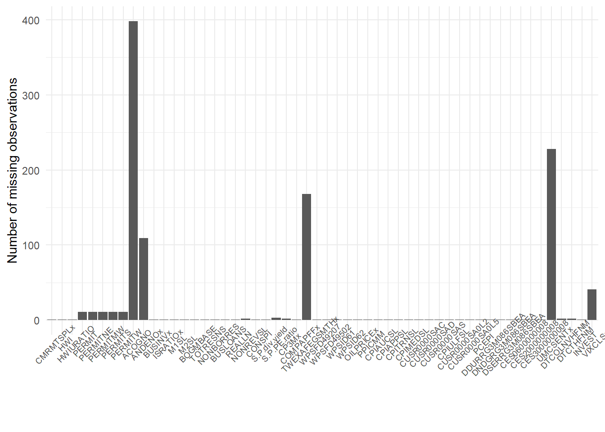
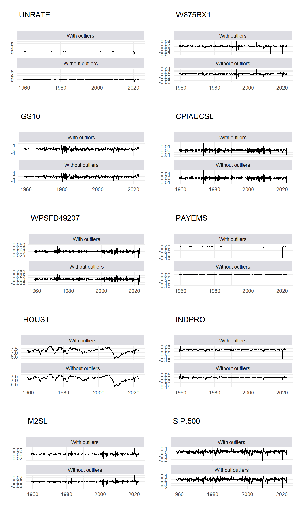

4 2) Imputation
4.1 Outliers detection
count_outlier(d_stationary)
## Outliers to NAs
d_outlier <- outlier_to_missing(d_stationary)
cat("\n", sum(is.na(d_outlier)) - sum(is.na(d_stationary)), "missing values have been introduced")
#>
#> 151 missing values have been introduced
compare_data(d_stationary, d_outlier,
# variable_list = c("INDPRO","UNRATE", "S.P.500"),
variable_list = target_variables,
ribbon_labs = c("With outliers", "Without outliers")
)
#> Warning: Removed 2 row(s) containing missing values (geom_path).
#> Removed 2 row(s) containing missing values (geom_path).
#> Removed 2 row(s) containing missing values (geom_path).
#> Warning: Removed 3 row(s) containing missing values (geom_path).
#> Removed 3 row(s) containing missing values (geom_path).
#> Warning: Removed 2 row(s) containing missing values
#> (geom_path).
#> Warning: Removed 1 row(s) containing missing values
#> (geom_path).
#> Warning: Removed 2 row(s) containing missing values
#> (geom_path).
#> Warning: Removed 3 row(s) containing missing values
#> (geom_path).
#> Warning: Removed 2 row(s) containing missing values
#> (geom_path).
4.2 Imputation of the missing values
d_imputed <- em_impute(d_outlier, r = 8)
#> Distance is: 1.6718 Distance is: 3.3624 Distance is: 0.0903
#> Distance is: 0.0649 Distance is: 0.0523 Distance is: 3.1116
#> Distance is: 0.0406 Distance is: 3.2676 Distance is: 0.0349
#> Distance is: 0.0323 Distance is: 0.0298 Distance is: 0.0273
#> Distance is: 0.0249 Distance is: 0.0227 Distance is: 1.0722
#> Distance is: 0.019 Distance is: 0.0174 Distance is: 0.016
#> Distance is: 0.0148 Distance is: 0.0137 Distance is: 0.0127
#> Distance is: 0.0118 Distance is: 0.011 Distance is: 0.0103
#> Distance is: 0.0096
# d_imputed <- extract_and_fill(d_outlier, r = 8)$imputed ## Previous code, gives even more smoothed imputated values
compare_data(d_stationary, d_imputed,
variable_list = target_variables,
ribbon_labs = c("With missing", "Imputed")
)
#> Warning: Removed 2 row(s) containing missing values (geom_path).
#> Removed 2 row(s) containing missing values (geom_path).
#> Removed 2 row(s) containing missing values (geom_path).
#> Warning: Removed 3 row(s) containing missing values (geom_path).
#> Removed 3 row(s) containing missing values (geom_path).
#> Warning: Removed 2 row(s) containing missing values
#> (geom_path).
#> Warning: Removed 1 row(s) containing missing values
#> (geom_path).
#> Warning: Removed 2 row(s) containing missing values
#> (geom_path).
#> Warning: Removed 3 row(s) containing missing values
#> (geom_path).
#> Warning: Removed 2 row(s) containing missing values
#> (geom_path).